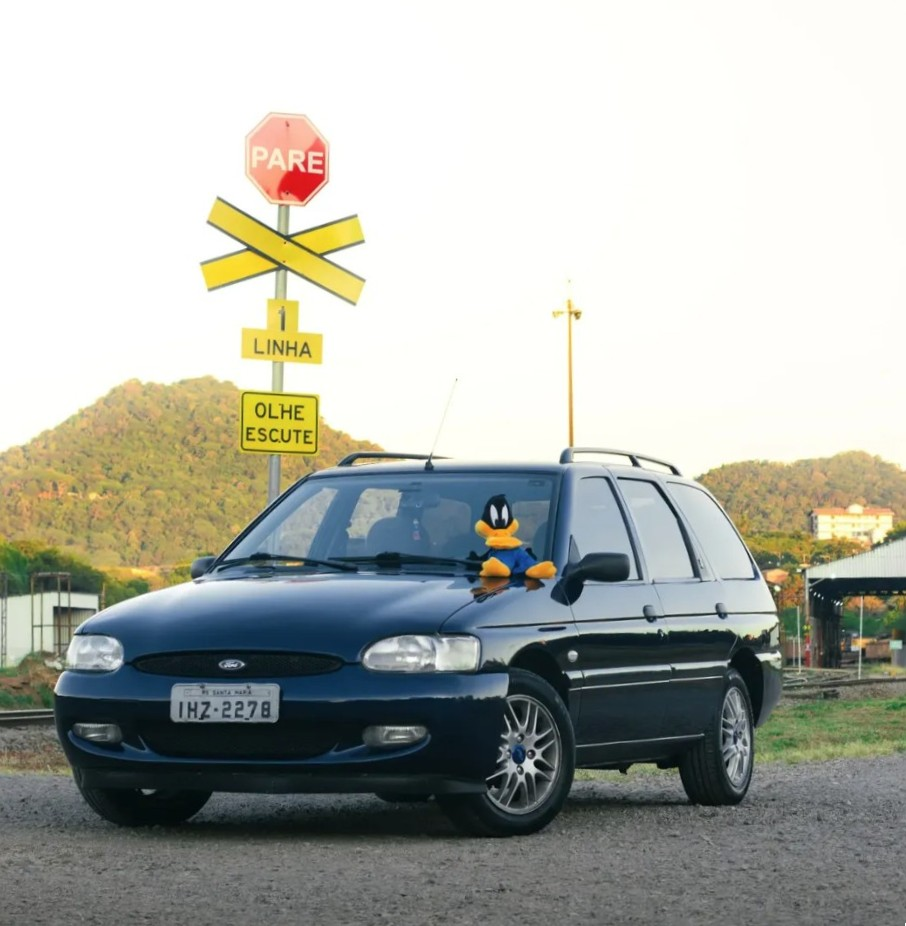
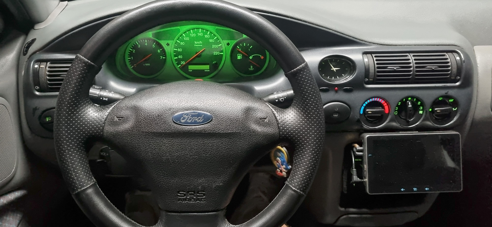

GarageX5.
Modernização e engenharia aplicadas a um veículo presente há mais de 20 anos na família. Um projeto baseado no conceito de retrofit, visando atualizar recursos tecnológicos preservando a originalidade de fábrica.

Escortão e seu mascote oficial: Patolino!
Sobre
- Modelo:Escort Station Wagon
- Ano:1998
- Fabricante:Ford Europe
- Plataforma:Ford CE14
- Cor:Azul Genebra (State Blue)
Performance
- Motor:Zetec-E 1.8L 16V
- Potência:115 cv @ 5.750
- Torque:16,3 Kgfm
- Câmbio:Ford iB5 (MT5)
- 0-100 km/h:9,6s
Origem de Fabricação
- Montagem:General Pacheco, Buenos Aires, Argentina
- Motor:Bridgend, Pais de Gales, Reino Unido
- Câmbio:Taubaté, São Paulo
Dimensões
- Comprimento:4.302 mm
- Entre-Eixos:2.523 mm
- Peso:1.230 kg
- Tanque:64 Litros
Engenharia de Upgrades & Retrofits
Modificações mapeadas e implementadas para elevar o nível de conectividade, segurança e conforto, integrando sistemas embarcados modernos à arquitetura original do veículo.

Interior & Conforto
-
Volante do Escort RS revestido em couro e Painel de Instrumentos Digital do Fiesta Sport.
-
Iluminação interna completa em LED, preservando rigorosamente as tonalidades de cor originais.
-
Vidros elétricos com função um-toque nas quatro portas, antiesmagamento e espelhos elétricos com desembaçador.
Elétrica & Sistemas Embarcados
-
Upgrade para ECU com módulo de injeção EEC-V, compatível com o protocolo de diagnóstico OBD2.
-
Head-Up Display (HUD), para projeção de telemetria de velocidade no para-brisa.
-
Sistema Customizado Follow Me Home: acionamento automático do DRL por 15 segundos ao destravar o veículo ou abrir as portas.
Conectividade & Áudio
-
Central multimídia externa com Android Auto e Apple CarPlay sem fio integrada à câmera de ré.
-
CD Player original Ford CDR4600 mantido no painel, com adaptação física para entrada auxiliar (AUX).
-
Controle de som integrado diretamente no volante (Focus Ghia) e módulo de áudio original do Escort XR3.
Exterior & Estética
-
Rodas de liga leve aro 15" do Focus Ghia montadas sobre pneus Michelin Primacy 4 (185/60 R15).
-
Faróis principais em LED de temperatura OEM (4000K) e repetidores de seta em LED dinâmico com DRL.
-
Elementos estéticos do modelo de performance: Grade colmeia dianteira do Escort RS e Front Lip do Focus MK1.5.
Performance & Mecânica
-
Otimização do fluxo de ar de admissão utilizando filtro de alta performance InFlow Inbox.
-
Cat Delete (downpipe customizado) acoplado a uma ponteira dupla em Inox 304.
-
Difusor de escape eletrônico de 4" com controle remoto.
Automações
-
Telemetria de funcionamento do motor transmitida em tempo real para o Home Assistant no UltimateLab.
-
Os dados críticos da ECU alimentam rotinas de monitoramento ativo e automação preditiva, disparando alertas push instantâneos em caso de anomalias.